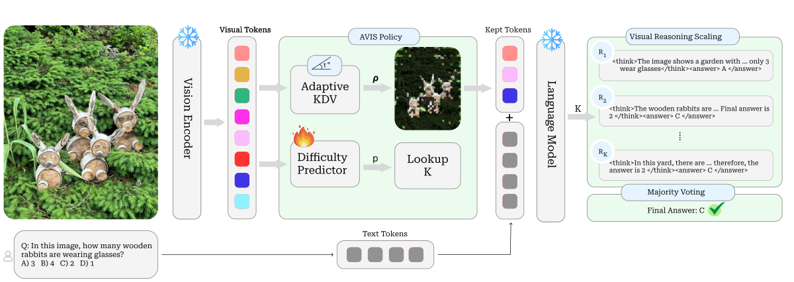
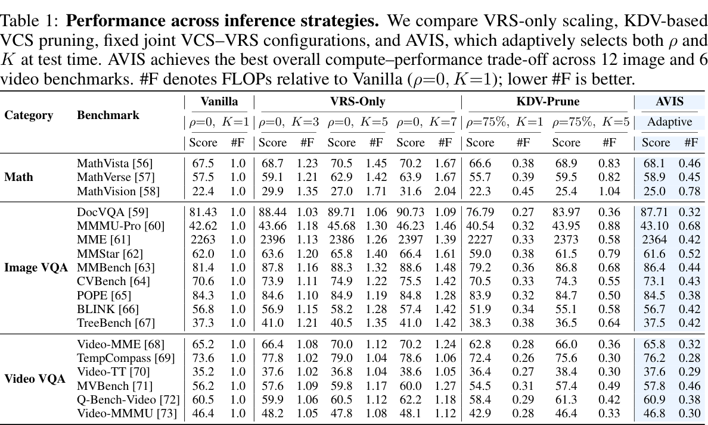
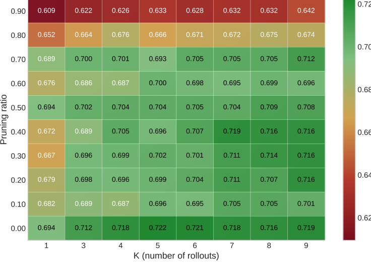
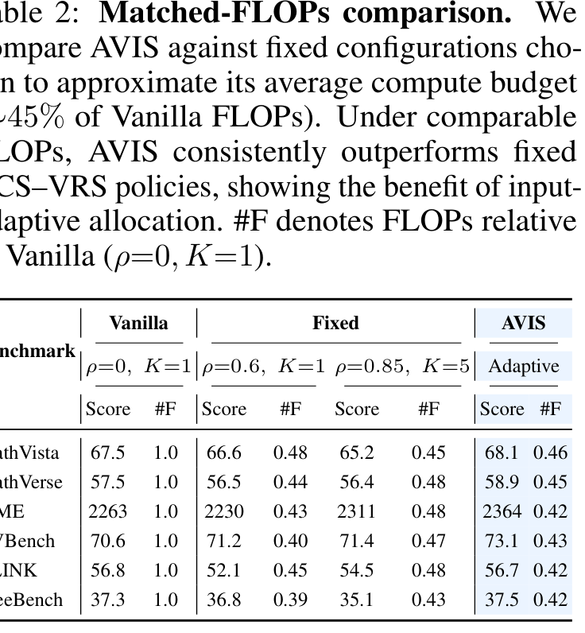
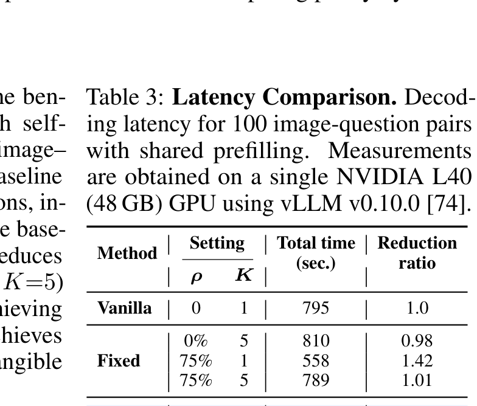
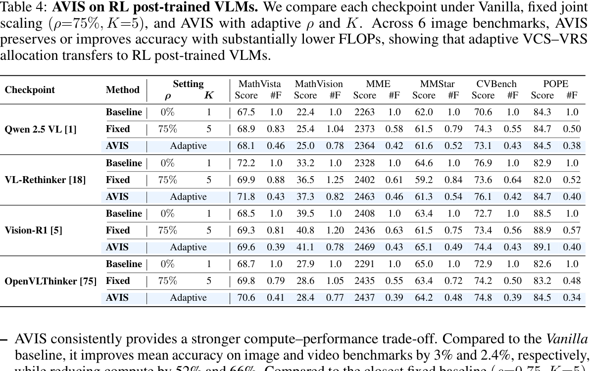

*Equal contribution. †Work done at Samsung.
Chain-of-thought prompting and test-time scaling can improve visual reasoning, but they are expensive: high-resolution images and videos create long visual prefixes, while repeated reasoning rollouts increase decoding cost. AVIS frames this as a joint test-time allocation problem over two coupled axes: Visual Context Scaling (VCS), which controls how many visual tokens are retained, and Visual Reasoning Scaling (VRS), which controls how many reasoning trajectories are sampled and aggregated.
Use Key Diversity Visual pruning to remove redundant visual tokens before the language-model prefill.
Use a lightweight difficulty predictor to choose the rollout budget K for self-consistency.
Run K shared-prefill rollouts, aggregate answers by majority vote, and keep compute below the vanilla baseline.

AVIS has two small, deployment-friendly decisions. First, adaptive KDV scores visual tokens using diversity in attention-key space and keeps a sample-dependent subset of tokens. Second, a difficulty-aware rollout selector maps a predicted solvability score to K in {1, 3, 5, 7}. Easy examples use little compute, hopeless examples avoid wasteful rollouts, and hard-but-solvable examples receive the largest reasoning budget.
image FLOPs
with +1.9 average score over vanilla
video FLOPs
with +1.3 average score over vanilla
matched-FLOPs gain
over the closest fixed policy



Shared-prefill inference makes adaptive reasoning practical: AVIS keeps wall-clock latency close to vanilla while improving the accuracy-compute trade-off. The same allocation idea also transfers to RL post-trained VLMs such as VL-Rethinker, Vision-R1, and OpenVLThinker.


@misc{jeddi2026avis,
title = {AVIS: Adaptive Test-Time Scaling for Vision--Language Models},
author = {Ahmadreza Jeddi and Minh N. Le and Amirhossein Kazerouni and Hakki Karaimer and Hue Nguyen and Iqbal Mohomed and Michael Brudno and Konstantinos G. Derpanis and Alex Levinshtein and Babak Taati and Radek Grzeszczuk},
year = {2026},
note = {Preprint},
url = {https://avis-vlm.github.io/}
}